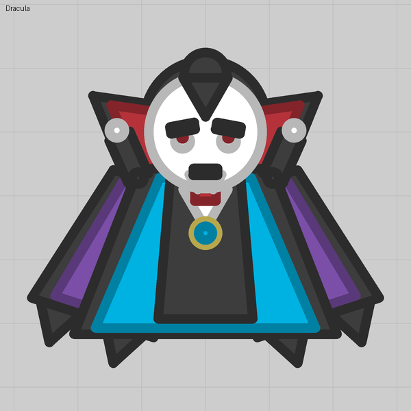

Lesson 05
Eyes that watch
An auto turret turns toward the nearest enemy. Make its disc the eyeball and let the pupil ride on it.
What you see
Two eyes that look at whatever comes near, pupils and all, with no gun on them.
The trick
An auto turret always turns toward the nearest target inside its Range and Arc, whether or not it carries a weapon. So a turret with nothing on it but a part is a part that watches. Set the disc's Base size and Base color to make it the white of the eye, and put the pupil on the turret, a little ahead of its centre, so it points where the turret looks.
Numbers that matter
| Field | Value | Notes |
|---|---|---|
| Base size | 16 (30 for a big eyeball, 1 to hide a disc) | The disc's radius |
| Base color | White | The eye's white; the pupil is Border grey |
| Arc | 90 | 0 lets it turn all the way round; a tiny arc (5) pins it |
| Range | 1700 default | 0 switches tracking off (lesson 07 uses that) |
| Pupil Offset X | 6 | Ahead of the pivot, so it reads as a glance |
Gotchas
- A turret with nothing to shoot rests at its Facing: 0 looks ahead.
- Turrets cannot ride turrets: an eye on a swinging tail will not swing with it (it is placed where you put it and ignores the mount).
- Eight auto turrets per tank, and that is a hard limit. Two eyes spend two.
- Parts riding a turret can also sit under its disc (eyelids, a socket) when they are not marked over the body.
Where we used it

